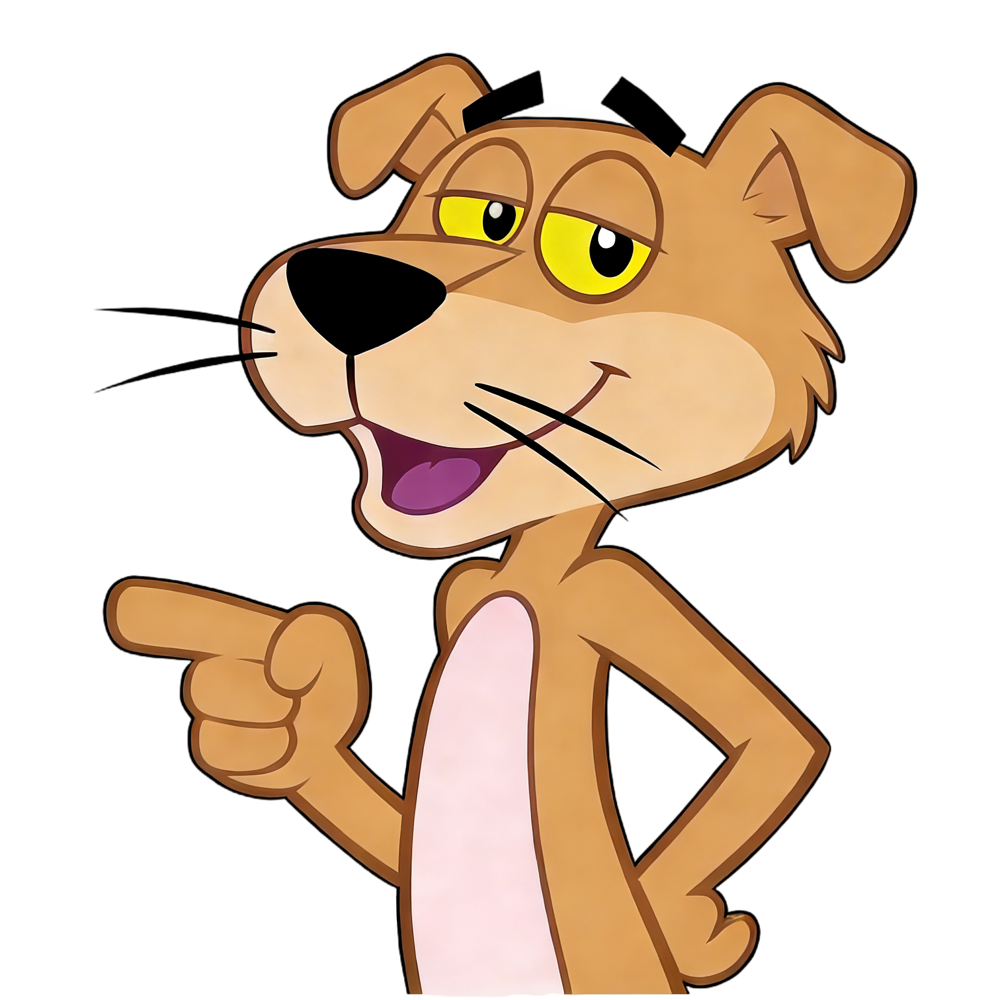
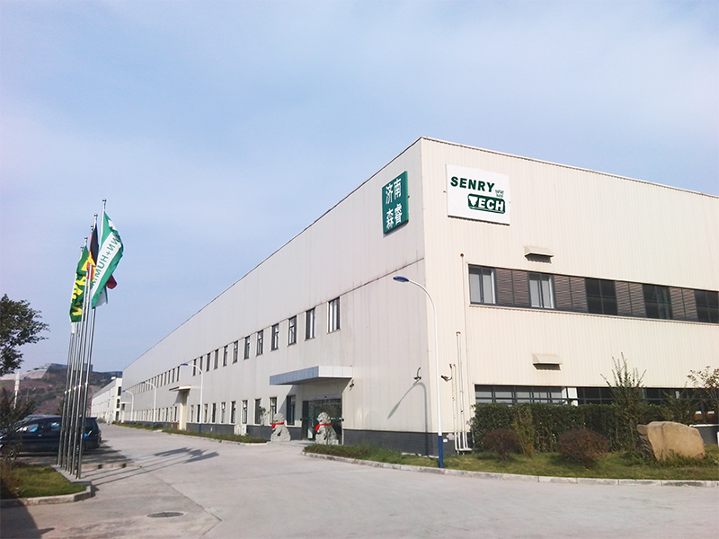

2008 年的晨光里，Senrytech 与激光切割设备的故事，从“让金属与光的相遇更从容” 开始。
我们始终相信，每一台设备都该是生产场景里的 “恰好选项”— 于是蹲在车间的光影里，摸透碳钢的肌理、不锈钢的锋芒、铝合金的轻韧，再把这些材质的脾性，织进设备与方案的适配逻辑里。
从本地厂房的机床旁，到全球 30 余国车间的风里，5000 多家企业的生产节奏里，都藏着我们 “让合适的设备遇见对的需求” 的温柔：是帮初创厂省掉试错成本的笃定，是让外贸单缩短交货周期的轻捷，是让金属在激光下舒展成想要形状的妥帖。
我们不做 “搬运”，只做 “联结”— 联结设备的精度与生产的温度，联结需求的细碎与方案的周全。这是我们从 2008 年写到今天的，关于 “光与金属，恰好相逢” 的故事。


始终致力于打造契合工业场景、兼具卓越品质与合理价格的激光加工设备，以产品精准触达行业客户的核心需求。
让每一位从业者都能成为产业创新的创造者。
客户为友，共生共赢
信念为基，价值同行
乐观向远，笃行成果
研发项目总监
运营总监
财务总监
市场营销总监
填写下方表单，我们的专业顾问将在24小时内与您联系